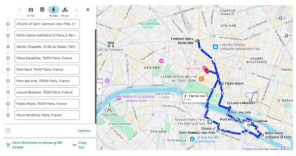
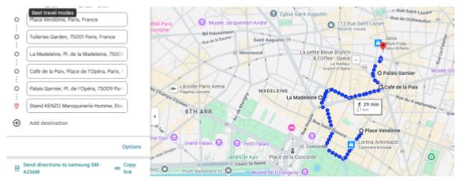

Paris

- Iglesia Saint Germain des Prés.
-
Catedral de Notre Dame.
A 15’ se encuentra L’As du Fallafel y el
Barrio Judío Le Marais:
- Rue du Roi de Sicile: calle peatonal y centro comercial del barrio.
-
Rue des Rosiers: vía principal del histórico barrio judío.
Fachadas con inscripciones en hebreo y francés que datan de principios del siglo XX,
ideales para sentir la historia del lugar.
- Sainte Chapelle y paseo por Place Dauphine.
-
Cruzar el Pont Neuf y luego el
Pont des Arts hasta llegar al Louvre.
-
Palais Royal y luego Place Vendôme.

-
Jardin des Tuileries y pasar por el
Hotel Le Meurice.
- Iglesia de La Madeleine.
-
Pasar por Café de la Paix y el
Gran Palacio Garnier (Ópera).
- Galerías Lafayette.
-
Souvenirs 1€:
Barrio de Montmartre,
calle Rue de Steinkerque (28’ desde el hotel).
-
Galerías Lafayette a 9’ del hotel.
En el camino se encuentran Zara y,
pasando un poco más, H&M.